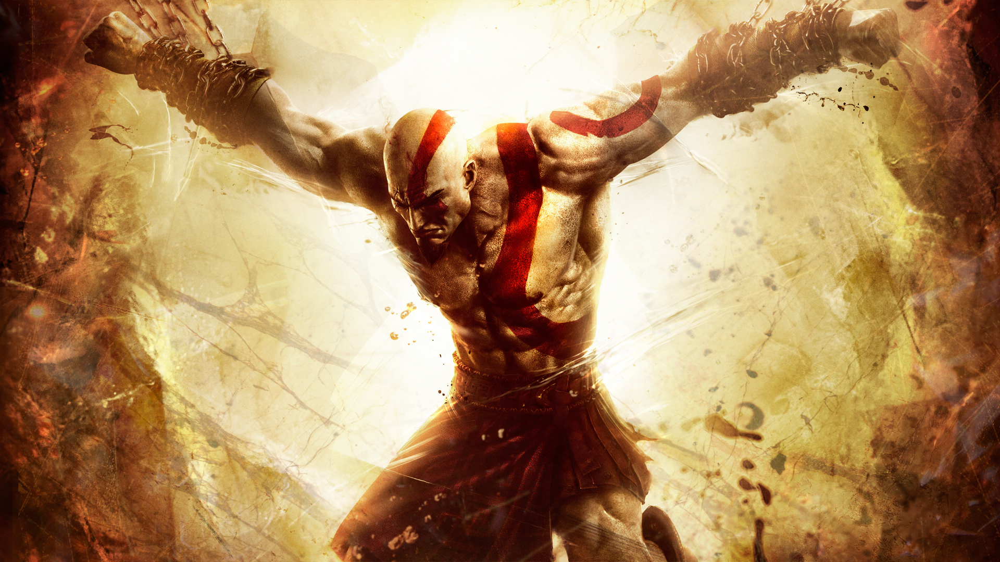
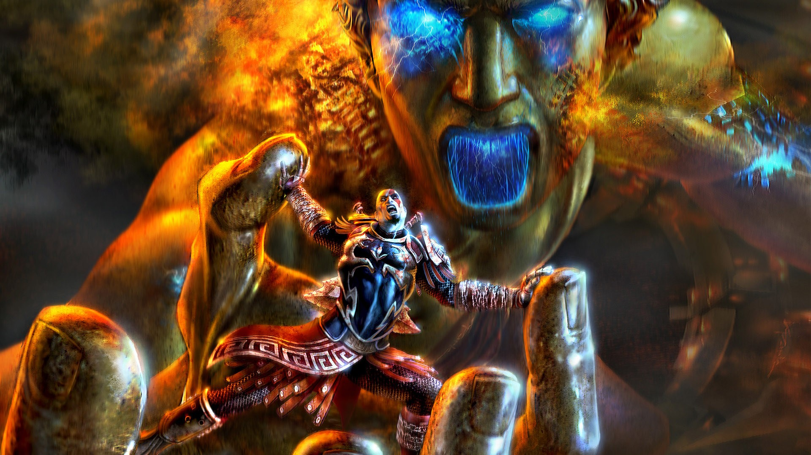
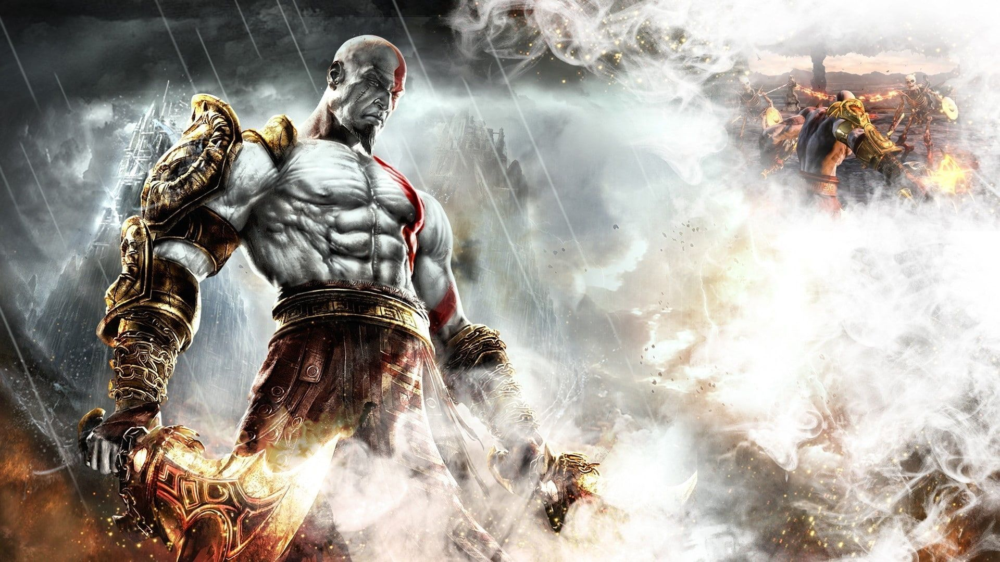

Como um guerreiro espartano, ele se tornou o "Fantasma de Esparta" depois
de acidentalmente matar sua família devido aos truques de Ares. Mais tarde, ele vinga a
morte de sua família e se torna o deus da guerra depois de matar Ares. Posteriormente
é revelado que ele é um semideus, o filho de Zeus, que mais tarde traiu Kratos. A
vingança era o tema central da era grega, a cada capítulo mais informações de Kratos e
suas relações com sua família e os deuses do Olimpo surgia. Na era nórdica da série,
Kratos dá uma reviravolta para a redenção, conhecido pela sua brutalidade e raiva, ali
encontramos um kratos controlando sua raiva e aprendendo a ser verdadeiramente pai
de seu filho, Atreus, enquanto enfrentava monstros e deuses do reino nórdico.
de acidentalmente matar sua família devido aos truques de Ares. Mais tarde, ele vinga a
morte de sua família e se torna o deus da guerra depois de matar Ares. Posteriormente
é revelado que ele é um semideus, o filho de Zeus, que mais tarde traiu Kratos. A
vingança era o tema central da era grega, a cada capítulo mais informações de Kratos e
suas relações com sua família e os deuses do Olimpo surgia. Na era nórdica da série,
Kratos dá uma reviravolta para a redenção, conhecido pela sua brutalidade e raiva, ali
encontramos um kratos controlando sua raiva e aprendendo a ser verdadeiramente pai
de seu filho, Atreus, enquanto enfrentava monstros e deuses do reino nórdico.
Historia






Jogos
God of War Ancension
God of War Chains of Olympus
God of War 1
God of War Ghost of Sparta
God of War 2
God of War 3
God of War
God of War Ragnarok